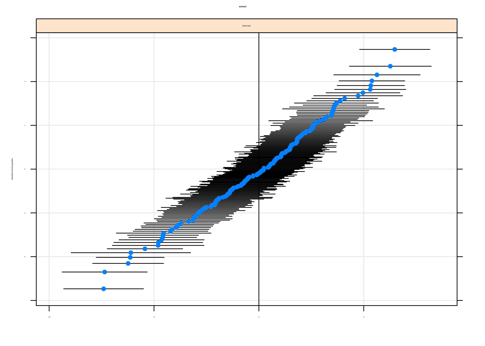

Capítulo 18 Modelos mixtos
María Durbán y Víctor Casero
18.1 Conceptos básicos
Los modelos mixtos (MMs) para variables de respuesta continuas son modelos estadísticos en los que los residuos siguen una distribución Normal pero puede que no sean independientes o no tengan varianza constante. Son necesarios en muchas situaciones, sobre todo en experimentos donde se realiza algún tipo de muestreo:
- Estudios con datos agrupados, como por ejemplo, alumnos en una clase, individuos en una ciudad.
- Estudios longitudinales o de medidas repetidas, donde un individuo es medido repetidamente a lo largo del tiempo o bajo condiciones distintas.
Este tipo de estudios se pueden encontrar en diferentes áreas como la Medicina, Biología, Ciencias Experimentales y Sociales.
18.1.1 Tipo y estructura de los datos
La estructura de los datos con la que se trabaja es el factor determinante para saber si se han de utilizar modelos mixtos, y en su caso, qué tipo de modelo.
Datos jerárquicos (o agrupados)
En este tipo de datos la variable dependiente (de respuesta, de interés) se mide una sola vez en cada individuo (la unidad de análisis), y los individuos está agrupados (o anidados) en unidades mayores. Muchos tipos de datos tienen una estructura jerárquica: alumnos en escuelas, personas en municipios, pacientes en hospitales, plantas en una parcela…
Las jerarquías son una forma de representar la relación de dependencia que hay entre los individuos y los grupos a los que pertenecen. Por ejemplo, supóngase que se quiere hacer un estudio sobre el tiempo de recuperación en pacientes hospitalizados por COVID-19 en diferentes hospitales. Se tiene la siguiente estructura con dos niveles:
- Muchos individuos en el nivel \(1\) (pacientes)
- Agrupados en unas pocas unidades en el nivel \(2\) (hospitales)
 Las estructuras multinivel pueden aparecer también como consecuencia del
diseño del estudio que se está llevando a cabo. Por ejemplo, una
encuesta sobre el estado de salud puede dar lugar a un diseño a tres
niveles: primero se muestrean regiones, luego distritos y después
individuos.
Las estructuras multinivel pueden aparecer también como consecuencia del
diseño del estudio que se está llevando a cabo. Por ejemplo, una
encuesta sobre el estado de salud puede dar lugar a un diseño a tres
niveles: primero se muestrean regiones, luego distritos y después
individuos.
En cada nivel de la jerarquía se pueden medir variables. Algunas estarán medidas en su nivel natural, por ejemplo, en el nivel del hospital se podría medir el tamaño, y al nivel de los pacientes se podría medir su situación socio-económica. Además, se pueden mover las variables de un nivel a otro mediante agregación o desagregación:
- Agregación: La variable al nivel más bajo se mueve a un nivel más alto, por ejemplo, se pueden asociar a cada hospital la media del nivel socioeconómico de sus pacientes.
- Desagregación: Mover las variables a un nivel más bajo, por ejemplo, asignarle a cada paciente una variable que indique el tamaño de su hospital de referencia.
Medidas repetidas y datos longitudinales
En este tipo de datos la variable dependiente se mide más de una vez a un mismo individuo (Singer03?). Por ejemplo, se miden los niveles de glucosa de un enfermo antes y después de haberle inyectado insulina. Este tipo de datos también puede ser considerados como datos multinivel (o jerárquicos) donde el Nivel 2 representa a los individuos y el Nivel 1 representa a las diferentes medidas tomadas. Dado que las medidas se toman a un mismo individuo, es probable que dichas medidas no sean independientes, por lo que utilizar un modelo lineal ordinario no sería apropiado.

Por datos longitudinales, se entienden datos en los que la variable dependiente se ha medido en distintos instantes de tiempo en cada una de las unidades de análisis. En algunos casos, cuando la variable dependiente se mide a lo largo del tiempo, puede ser difícil identificar si los datos son medidas repetidas o datos longitudinales. Desde el punto de vista del análisis de los datos mediante MMs esta distinción no es un elemento crítico. Lo importante es que en ambos tipos de datos la variable dependiente se ha medido repetidas veces en la misma unidad de análisis, y que por tanto las observaciones estarán correlacionadas.
18.1.2 ¿Efectos fijos o aleatorios?
En un modelo mixto la clave se encuentra en la distinción entre efectos fijos y aleatorios (Snijers03?). Esto es importante porque la inferencia y el análisis de ambos efectos es distinta.
Los efectos fijos son variables en las cuales el investigador ha incluido sólo los niveles (o tratamientos) que son de su interés. Por ejemplo, en un experimento se puede estar interesados en comparar dos grupos, uno al que se le aplica un tratamiento y otro de control. En este caso, el objetivo del estudio compara los grupos y no interesa generalizar los resultados a otros tratamientos que podrían haber sido incluidos. Otro ejemplo sería el caso en el que se hace un encuesta y se eligen 10 ciudades. Si sólo interesan los resultados para esas 10 ciudades y no se quieren generalizar los resultados al resto de ciudades que podrían haber sido seleccionadas, la variable ‘ciudad’ será un efecto fijo. Si se eligen las ciudades de forma aleatoria de una población grande de ciudades se consideraría la variable ‘ciudad’ como un efecto aleatorio.
Una cantidad se considera aleatoria cuando cambia sobre las unidades de una población. Cuando un efecto en un modelo estadístico es considerado aleatorio, se está asumiendo que se quieren extraer conclusiones sobre la población de la cual se han elegido las unidades observadas, y no se tiene interés en esas unidades en particular. En este contexto se habla de intercambiabilidad, en el sentido de que se podría cambiar una unidad de la muestra por otra de la población y sería indiferente. Este es el caso de los factores de agrupamiento o diseño, como son los bloques en un experimento agrícola, o los días cuando un experimento se lleva a cabo en días distintos, o un técnico de laboratorio cuando hay varios haciendo el experimento; también lo serían los sujetos en un diseño de medidas repetidas o las localizaciones donde se recogen muestras en un río, si el objetivo es generalizar a todo el río.
Los métodos estándar utilizados para construir tests e intervalos de confianza para los efectos fijos, no son válidos para los efectos aleatorios, pues los efectos observados son sólo una muestra de todos los posibles efectos.
La clave para distinguir, estadísticamente hablando, entre efectos fijos y aleatorios es si los niveles de la variable se pueden interpretar como extraídos de una población con una cierta distribución de probabilidad. En el caso de un efecto fijo, normalmente interesará comparar los resultados de la variable dependiente para los distintos niveles de la variable explicativa, es decir, interesará la diferencia entre las medias. En el caso de efectos aleatorios, no interesa específicamente comparar si las medias son distintas, sino cómo el efecto aleatorio explica la variabilidad en la variable dependiente. Por lo tanto, para que un efecto pueda considerarse aleatorio, es necesario que la variable dependiente presente cierta variabilidad no explicada asociada con las unidades del efecto aleatorio.
La siguiente tabla puede ayudar ayudar a determinar si un efecto es fijo o aleatorio

Por ejemplo, en un estudio sobre satisfacción en el trabajo (variable dependiente) de los empleados (unidades observadas) de un cierto número de empresas (efecto aleatorio), si el nivel de satisfacción de los empleados de unas empresas es mayor que el de otras y el investigador no lo tiene en cuenta, habrá una cierta variabilidad residual asociada con el efecto ‘empresa’. Si esta variabilidad fuera próxima a cero, no sería necesario incluir el efecto aleatorio asociado con la empresa.
¿Por qué hay que utilizar modelos mixtos?
Cuando las observaciones están agrupadas en niveles o siguen una cierta jerarquía, las unidades se ven afectados por el grupo al que pertenecen. Las jerarquías (o niveles) permiten representar la relación de dependencia entre los individuos y los grupos a los que pertenecen. Los alumnos que están en una misma escuela se parecen más entre sí que si se hubieran seleccionado aleatoriamente de entre toda la población de alumnos. Los modelos mixtos permiten tener en cuenta que las observaciones no son independientes.
18.2 Formulación del modelo con efectos aleatorios o modelos mixtos
El nombre de modelos mixtos lineales viene del hecho de que estos modelos son lineales en los parámetros, y en las covariables, y pueden implicar efectos fijos o aleatorios. Son, por lo tanto, una extensión de los modelos lineales de regresión.
18.2.1 Formulación general
La formulación general de un modelo mixto tiene la siguiente forma: \[ y = X \beta + Z u + \epsilon, \quad u\sim N(0, G), \quad \epsilon \sim N(0, R)\] donde
- \(X\) es una matriz \(n \times k\) (\(k\) es el número de efectos fijos)
- \(Z\) es una matriz \(n \times p\) (\(p\) es el número de efectos aleatorios)
- \(\beta\) es el vector de efectos fijos y \(u\) el de efectos aleatorios
- \(G\) es la matriz de varianzas-covarianzas de los efectos aleatorios, con dimensión \(p \times p\)
- \(R\) es la matriz de varianzas-covarianzas del error
18.2.1.1 Estimación de \(\beta\) y \(u\)
Se hace mediante las llamadas ecuaciones de Henderson (Henderson1953?). Permiten obtener el mejor estimador lineal insesgado de \(X\beta\) y el mejor predictor lineal insesgado de \(u\). Se obtienen maximizando la densidad conjunta de \(y\) y \(u\): \[f(y, u) = f(y | u)f(u), \quad y | u \sim N(X\beta + Zu, R)\quad u\sim N(0, G).\] Derivando con respecto a \(\beta\) y \(u\) se obtienen las ecuaciones de Henderson cuya solución es: \[\begin{eqnarray*} \hat \beta = \left ( X^\prime V^{-1} X \right )^{-1}X^\prime V^{-1} y \\ \hat u = G Z^\prime V^{-1} (y -X \hat \beta), \end{eqnarray*}\] donde \(V = Z G Z^\prime + R\). Pero, \(V\) depende de los parámetros de la varianza en el modelo que forman parte de \(G\) y \(R\) y que es necesario estimar, como se muestra a continuación.
18.2.1.2 Estimación de los componentes de la varianza
Los métodos más comunes para la estimación de los parámetros de las matrices de covarianza son: Máxima verosimilitud (ML) o Máxima verosimilitid restringida (REML). No existe una solución cerrada para los estimadores, y se hace de forma numérica o mediante algoritmos iterativos. REML tiene en cuenta los grados de libertad utilizados para estimar los efectos fijos en el modelo. Si \(n\) es pequeño, REML dará mejores estimaciones que ML, si \(n\) es grande, no habrá prácticamente ninguna diferencia. El método preferido es REML.
18.2.2 Inferencia y selección del modelo
18.2.2.1 Contrastes de hipótesis para los efectos fijos, \(\beta\)
Utilizando la distribución aproximada: \[\hat \beta \sim N \left ( \beta, \underbrace{(X^\prime \hat V^{-1} X )^{-1}}_{Var(\hat \beta)} \right )\]
- Si se contrastan parámetros individuales se acudirá al t-test para un solo efecto,
- Si se contrastan un conjunto de parámetros se acudirá al F-test para más de un efecto,
- También se pueden comparar modelos usando el test de la razón de verosimilitud, LRT por sus siglas en inglés (ojo! hay que utilizar ML para estimar los parámetros de la varianza) \[\begin{equation} LRT = -2\left [ ln(l_{H_0})- ln(l_{H_1}) \right ]\approx \chi^2_{df}. \tag{18.1} \end{equation}\]
18.2.2.2 Contrastes de hipótesis para los parámetros de varianza
Al usar el test LRT (18.1) se ha de tener en cuenta que la distribución asintótica del estadístico del test depende de si el valor del parámetro bajo la hipótesis nula (\(H_0\)) está en la frontera del espacio paramétrico (es decir si se está testando si el parámetro de varianza es cero o no):
Caso 1: El valor de los parámetros de varianza bajo la \(H_0\) no están en la frontera del espacio paramétrico (por ejemplo, al contrastar que los parámetros de varianza de dos efectos aleatorios son iguales o no). En ese caso se utiliza el test normalmente.
Caso 2: El valor de los parámetros de varianza bajo la \(H_0\) están en la frontera del espacio paramétrico (por ejemplo, si se quiere contrastar que la varianza del efecto aleatorio es cero o no). La distribución asintótica del estadístico del test es una mixtura entre \(\chi^2_p\) y \(\chi^2_{p-1}\), concretamente \(0.5 \chi^2_p + 0.5\chi^2_{p-1}\), donde \(p\) es el número de parámetros de la varianza que se hacen cero bajo la \(H_0\).
18.2.3 Diagnosis del modelo
En el caso de modelos mixtos se ha de verificar la hipótesis de normalidad tanto para los residuos al nivel más bajo (medidas repetidas en los raíles) como para los efectos aleatorios (raíles), y también las de independencia (en su caso).
En el caso de los modelos mixtos, se utilizan los residuos condicionales, estos son la diferencia entre los valores observados y el valor predicho condicional: \[\hat\epsilon = y-X \hat \beta -Z \hat u. \] Estos residuos tienden a estar correlados y sus varianzas pueden cambiar de un grupo a otro, aunque en el verdadero modelo los residuos sean incorrelados y con varianza constante. Para solucionar este problema se pueden escalar los residuos por sus desviaciones estándar (o las estimaciones de éstas), dando lugar a los residuos estandarizados (si las desviaciones estándar son conocidas), o a los residuos studentizados (si son desconocidas y se utilizan estimaciones de las mismas). Con estos residuos se hace un análisis similar al caso de modelos de regresión lineal.
Además se tendrá que comprobar la hipótesis de normalidad de los efectos aleatorios
18.3 Funciones de R para ajustar modelos mixtos
Hay varios paquetes de R para el ajuste de modelos mixtos. Los más usados son nlme y lme4. El segundo es una versión del primero que
incluye modelos más generales, y mejora los gráficos. A continuación se
describe la función principal del paquete lme4.
18.3.1 La función lmer()
Esta función permite el uso de efectos aleatorios anidados y de errores correlados o heterocedásticos dentro de los grupos. En general para definir un modelo mixto se necesita especificar la estructura de la media y de la parte aleatoria del modelo, incluidos los factores de agrupamiento, así como la estructura de correlación (si la hay).
También se puede especificar el método de estimación: ‘’REML’’ o ‘’ML’’.
La parte aleatoria del modelo se incluye entre paréntesis en la ecuación y \(|\) separa las variables de agrupamiento de las predictoras, si no hay variables predictoras para la parte aleatoria se pondría un 1.
La función VarCorr() aplicada a un objeto lmer da información sobre la estructura de componentes
de varianza.
18.4 Caso práctico
En esta sección se verá como construir diferentes modelos con efectos aleatorios según a qué nivel estén medidas las variables explicativas y se terminará dando una guía sobre como construir estos modelos en la práctica. Los datos con los que se va a trabajar se encuentran en el dataframe Hsb82 del paquete mlmRev y provienen de un estudio titulado High School and Beyond. Los datos corresponden a 7185 estudiantes repartidos en 160 escuelas,
el número de alumnos por escuela varía entre 14 y 67.
La variable de interés, mAch es el nivel estandarizado alcanzado en
matemáticas. Una cuestión inicial que se puede plantear es si el nivel socioeconómico (cses)
del alumno predice las diferencias en el nivel de matemáticas. Para ello
se ajustaría el modelo:
\[y_j = \beta_0 + \beta_1x_j + \epsilon_j, \]
este modelo ignora que los alumnos provienen de distintos centros (por
eso solo aparece el subíndice j que es el que representa a las unidades
de nivel más bajo, en este caso a los alumnos).
library(mlmRev)
multi0 <- lm(mAch ~ cses, data = Hsb82)
summary(multi0)
#>
#> Call:
#> lm(formula = mAch ~ cses, data = Hsb82)
#>
#> Residuals:
#> Min 1Q Median 3Q Max
#> -17.8660 -5.1165 0.2966 5.3880 14.8705
#>
#> Coefficients:
#> Estimate Std. Error t value Pr(>|t|)
#> (Intercept) 12.74785 0.07933 160.69 <2e-16 ***
#> cses 2.19117 0.12010 18.24 <2e-16 ***
#> ---
#> Signif. codes: 0 '***' 0.001 '**' 0.01 '*' 0.05 '.' 0.1 ' ' 1
#>
#> Residual standard error: 6.725 on 7183 degrees of freedom
#> Multiple R-squared: 0.04429, Adjusted R-squared: 0.04415
#> F-statistic: 332.8 on 1 and 7183 DF, p-value: < 2.2e-16La ordenada en el origen es 12.75 y la pendiente 2.19, lo que indica que por cada unidad que aumenta el nivel socio-económico, la puntuación del test aumenta en 2.19 unidades, además se puede ver que el coeficiente es significativo.
Supóngase que ocurre esta situación:

Los alumnos de la escuela A sacan, en promedio, mejores notas que las que le asignaría el modelo ajustado, con la escuela B ocurre lo contrario. El gráfico indica que la ordenada en el origen no debería ser la misma para todos los centros, sino que debería ser distinta para distintos centros. Es decir, el valor predicho debe ajustarse hacia arriba o abajo, eso se puede conseguir permitiendo que cada escuela tenga su propia ordenada en el origen: \[y_{ij} = \beta_{0i} + \beta_1x_{ij} + \epsilon_{ij}\]
Este modelo es similar al anterior añadiendo el subíndice \(i\) para identificar el centro al que pertenece cada alumno. En realidad, se utiliza una variable categórica con tantas categorías como escuelas.
multi1 <- lm(mAch ~ cses + school, data = Hsb82)Se está considerando a las escuelas como un efecto fijo y no aleatorio, es decir, implícitamente se está suponiendo que solo interesan estas escuelas en particular.
Las situación se pueden complicar más, es posible que el efecto del nivel socio-económico sea distinto para cada centro, es decir, que un aumento de una unidad en ese nivel puede dar lugar a un aumento distinto en la nota del test en cada centro. En la Figura 18.1 se ve como la pendiente de la recta para la escuela C es distinta a las dos anteriores.

Figura 18.1: Ilustración de posibles escenarios para tres escuelas
El modelo que permite tener en cuenta esta situación es: \[y_{ij} = \beta_{0i} + \beta_{1i}x_{ij} + \epsilon_{ij}\] donde aparece ahora el sub-índice \(i\) también en la pendiente, lo que indica que cada centro tiene una pendiente diferente.
multi2 <- lm(mAch ~ cses * school, data = Hsb82)El código anterior generaría 159 coeficientes más que son los que se incluirían con la interacción. Pero no interesan en estas escuelas en concreto, sino la población de la que estas escuelas son una muestra.
Con un modelo con efectos aleatorios se pueden contestar a preguntas como: ¿Cuales son las causas de esta variabilidad? ¿Qué variables pueden explicarla?
18.4.1 Modelo con ordenada en el origen aleatoria
Es el modelo mixto más sencillo. Se considera que los datos tienen una estructura con dos niveles, los alumnos están en el nivel 1 y están agrupados en escuelas, nivel 2. Se va a empezar suponiendo que no se dispone de ninguna variable explicativa, y que por lo tanto nuestro único interés es la diferencia entre las notas medias del test de matemáticas entre los distintos centros.
Los dos niveles del modelo son: \[\text{Nivel 1: } y_{ij} = \mu_{i} + \epsilon_{ij}\]
- El subíndice \(j\) corresponde a individuos y el \(i\) a escuelas, si se considera a las escuelas como un efecto aleatorio,
- \(\beta_{0i}\) (la media de cada escuela) vendría dada por: \[\text{Nivel 2: } \mu_{i} = \beta_{0} + u_{i},\]
- \(\beta_{0}\) es la media de todos los alumnos,
- \(u_{i}\) es la desviación de la media de la escuela \(i\) de la media de todas las escuelas.
Poniendo las dos ecuaciones juntas: \[\begin{equation} y_{ij} = \beta_{0} + u_{i} + \epsilon_{ij}, \quad i = 1, \ldots, m, \quad j = 1, \ldots n_m \tag{18.2} \end{equation}\]
- La media de \(y\) para el grupo \(i\) es \(\beta_0 + u_i\),
- Los residuos a nivel individual \(\epsilon_{ij}\) son la diferencia entre el valor de la variable respuesta del individuo \(j\) y la media del grupo al que pertenece,
- \(u_i\sim N( 0, \sigma^2_i )\), \(\epsilon_{ij}\sim N(0, \sigma^2 )\), y ambos son independientes, es decir, las observaciones que provienen de distintas escuelas son independientes.
En el ejemplo de las escuelas:
library(lme4)
Modelo0 <- lmer(mAch ~ 1 + (1 | school), data = Hsb82)
Modelo0
#> Linear mixed model fit by REML ['lmerMod']
#> Formula: mAch ~ 1 + (1 | school)
#> Data: Hsb82
#> REML criterion at convergence: 47116.79
#> Random effects:
#> Groups Name Std.Dev.
#> school (Intercept) 2.935
#> Residual 6.257
#> Number of obs: 7185, groups: school, 160
#> Fixed Effects:
#> (Intercept)
#> 12.64- La media total estimada es 12.64,
- La media para la escuela \(i\) es: 12.64\(+ \hat u_i\), donde \(\hat u_i\) es el efecto aleatorio de la escuela.
Para obtener los valores predichos de los efectos aleatorios se utiliza
la función ranef().
El siguiente gráfico permite ver los efectos aleatorios junto con sus intervalos de confianza (las escuelas han sido ordenadas atendiendo a su media para apreciar mejor la variabilidad entre las mismas).
Se dibujan los efectos aleatorios para ver si siguen una distribución
Normal, para eso se ha de ajustar el modelo con la función lmer():
library(lattice)
qqmath(ranef(Modelo0, condVar = TRUE))$school
Una primera aproximación para contrastar si hay o no diferencias entre los grupos sería calcular el intervalo de confianza para \(\sigma_u\):
confint(Modelo0)
#> 2.5 % 97.5 %
#> .sig01 2.594729 3.315880
#> .sigma 6.154803 6.361786
#> (Intercept) 12.156289 13.117121el intervalo no contiene al cero, pero la forma más correcta de hacerlo sería utilizando el test LRT (18.1) para: \[\begin{array}{ll} H_0: \quad \sigma^2_u = 0 \Rightarrow y_{ij} = \beta_0 + \epsilon_{ij} \\ H_1: \quad \sigma^2_u\neq 0 \Rightarrow y_{ij} = \beta_0 + u_i + \epsilon_{ij}. \end{array}\] El resultado del test en este caso se compara con el valor de una mixtura de distribuciones Chi-cuadrado \(0.5 \chi^2_0 + 0.5\chi^2_1\).
Modelo_NULL <- lm(mAch ~ 1, data = Hsb82)
test <- -2 * logLik(Modelo_NULL, REML = T) + 2 * logLik(Modelo0, REML = T)
mean(pchisq(test, df = c(0, 1), lower.tail = F))
#> [1] 9.320673e-217Conclusión: el efecto aleatorio es necesario en el modelo.
El siguiente paso sería introducir las variables explicativas, ya estén al nivel 1 o al 2.
18.4.1.1 Variables explicativas en el Nivel \(1\) (individuos)
Como la variable explicativa está medida al Nivel 1, se introduce en la ecuación del Nivel 1:
- \(\text{Nivel 1:}\quad y_{ij} = \mu_{i} + \beta_1x_{ij} + \epsilon_{ij}\)
- \(\text{Nivel 2:} \quad \mu_{i} = \beta_0 + u_i\)
Si \(x\) es una variable continua, este modelo asume que la pendiente de la recta es la misma para todas las escuelas (por eso \(\beta_1\) no lleva el subíndice \(i\)). Poniendo las dos ecuaciones juntas: \[y_{ij} = \underbrace{\beta_0 + \beta_1x_{ij}}_{\text{efectos fijos}} + \underbrace{u_{i} + \epsilon_{ij}}_{\text{efectos aleatorios}}\]
En este modelo, la relación global entre \(y\) y \(x\) viene representada por la línea recta con ordenada en el origen \(\beta_0\) y pendiente \(\beta_1\). Sin embargo, la ordenada en el origen para una determinada escuela \(i\) viene dada por \(\beta_0 + u_i\). Será mayor o menor que que la ordenada en el origen global \(\beta_0\) por una cantidad \(u_i\). Aunque la ordenada en el origen varía de grupo a grupo, la pendiente es la misma para todos los grupos. Todas las líneas rectas ajustadas para cada grupo son paralelas.
En el ejemplo de las escuelas, se introduce como variable explicativa
cses (nivel socioeconómico centrado):
Modelo1 <- lmer(mAch ~ cses + (1 | school), data = Hsb82)
Modelo1
#> Linear mixed model fit by REML ['lmerMod']
#> Formula: mAch ~ cses + (1 | school)
#> Data: Hsb82
#> REML criterion at convergence: 46724
#> Random effects:
#> Groups Name Std.Dev.
#> school (Intercept) 2.945
#> Residual 6.084
#> Number of obs: 7185, groups: school, 160
#> Fixed Effects:
#> (Intercept) cses
#> 12.636 2.191Ahora se tienen dos efectos fijos: \[\begin{array}{l} \hat \beta_0 = 12.64\\ \hat \beta_1 = 2.19\\ \end{array}\]
\(\hat \beta_0\) es la nota media para alumnos con nivel socieconómico medio (la variable está centrada). La recta media vendría dada por: \[E[y | cses] = 12.64 + 2.19~cses\]
Para comprobar si la variable cses es significativa se utiliza el
test LRT (18.1). Primero se tienen que
ajustar de nuevo los modelos que se quieren comparar usando máxima
verosimilitud (en vez de REML). Si se utiliza la función lmer() para
ajustar el modelo no es necesario reajustar con ML pues la función anova
lo hará automáticamente, mientras que si se usa la función lme() sí será necesario hacerlo.
anova(Modelo0, Modelo1)
#> Data: Hsb82
#> Models:
#> Modelo0: mAch ~ 1 + (1 | school)
#> Modelo1: mAch ~ cses + (1 | school)
#> npar AIC BIC logLik deviance Chisq Df Pr(>Chisq)
#> Modelo0 3 47122 47142 -23558 47116
#> Modelo1 4 46728 46756 -23360 46720 395.4 1 < 2.2e-16 ***
#> ---
#> Signif. codes: 0 '***' 0.001 '**' 0.01 '*' 0.05 '.' 0.1 ' ' 1Por lo tanto, el nivel socioeconómico afecta a los resultados escolares. Comparado con el modelo sin la variable explicativa (Modelo0), la inclusión del nivel socio-económico (Modelo1), ha reducido la variabilidad a nivel del alumno en un 2.8% ((6.257 - 6.084)/6.257 = 0.028)
18.4.1.2 Variables explicativas en el Nivel \(2\) (grupos)
Si las variable explicativas son medidas al Nivel 2: \[\begin{array}{l} \text{Nivel 1:}\quad y_{ij} = \mu_{i} + \epsilon_{ij} \\ \text{Nivel 2:}\quad \mu_{i} = \beta_0 + \beta_{2}s_{i} + u_{i}\\ \\ y_{ij} = \underbrace{\beta_0 + \beta_2s_{i}}_{\text{efectos fijos}}+\underbrace{u_{i} + \epsilon_{ij}}_{\text{efectos aleatorios}}\\ \end{array}\]
En nuestro ejemplo, la variable utilizada es sector (público o
privado):
\[mAch = \beta_0 + \beta_2~sector + u_{i} + \epsilon_{ij}\]
Se ajusta el modelo usando la función lmer()
Modelo2 <- lmer(mAch ~ sector + (1 | school), data = Hsb82)
Modelo2
#> Linear mixed model fit by REML ['lmerMod']
#> Formula: mAch ~ sector + (1 | school)
#> Data: Hsb82
#> REML criterion at convergence: 47080.13
#> Random effects:
#> Groups Name Std.Dev.
#> school (Intercept) 2.584
#> Residual 6.257
#> Number of obs: 7185, groups: school, 160
#> Fixed Effects:
#> (Intercept) sectorCatholic
#> 11.393 2.805\[E[y | sector] = 11.39 + 2.8~sector\] o equivalentemente \[\begin{array}{l} E[y | sector = 0] = 11.39\\ E[y | sector = 1] = 11.39 + 2.8 = 14.19\\ \end{array}\] La nota de un alumno en una escuela privada se espera que sea 2.8 unidades mayor que la de un alumno en una escuela pública (se puede generalizar puse se asume que las escuelas son un efecto aleatorio). La varianza del efecto aleatorio de nivel 2 \(\sigma^2_u\) ha descendido:\((2.935^2-2.584^2)/2.935^2 =\) \(0.22\), es decir que se ha reducido en un \(22 \%\) la variabilidad no explicada entre los centros al introducir la variable sector.
Para contrastar si la variable sector es significativa se usa de nuevo el test LRT:
anova(Modelo0, Modelo2)
#> Data: Hsb82
#> Models:
#> Modelo0: mAch ~ 1 + (1 | school)
#> Modelo2: mAch ~ sector + (1 | school)
#> npar AIC BIC logLik deviance Chisq Df Pr(>Chisq)
#> Modelo0 3 47122 47142 -23558 47116
#> Modelo2 4 47087 47115 -23540 47079 36.705 1 1.374e-09 ***
#> ---
#> Signif. codes: 0 '***' 0.001 '**' 0.01 '*' 0.05 '.' 0.1 ' ' 1Por lo tanto, el hecho de que la escuela sea pública o privada influye en el resultado académico de los alumnos.
18.4.2 Modelo con pendiente aleatoria
En este tipo de modelos se supone que la relación entre la variable respuesta y las variables explicativas va a ser distinta para las distintas unidades de nivel 2, es decir, la relación puede cambiar de un centro a otro. Por ejemplo, el efecto del nivel socioeconómico en las notas puede ser distinto en distintos centros, de modo que se puede relajar el modelo anterior, en el que la pendiente era la misma para todos los grupos, permitiendo que la pendiente varíe aleatoriamente entre los grupos. \[\begin{array}{ll} \text{Nivel 1:} &\quad y_{ij} = \mu_i + \beta_{1i}x_{ij} + \epsilon_{ij} \\ \text{Nivel 2:} & \quad \mu_i = \beta_0 + u_{i}\\ & \quad \beta_{1i} = \beta_{1} + v_{i} \\ \end{array}\] Poniendo las dos ecuaciones juntas: \[y_{ij} = \underbrace{\beta_0 + \beta_{1}x_{ij}}_{\text{efectos fijos}} + \underbrace{u_{i} + v_{i}x_{ij} + \epsilon_{ij}}_{\text{efectos aleatorios}}, \quad \left (\begin{array}{c} u_{i}\\ v_{i}\\ \end{array}\right ) \sim N(0, G_{i}) \quad G_{i} = \left ( \begin{array}{cc} \sigma^2_{u} &\\ \sigma_{uv}& \sigma^2_{v}\\ \end{array}\right ), \]
donde \(\sigma_{uv}\) es la covarianza entre las ordenadas en el origen de los grupos y las pendientes. Un valor positivo de la covarianza implica que grupos con un valor del efecto de grupo \(u_i\) elevado, tienden a tener valores elevados de \(v_i\), o equivalentemente, centros con ordenada en el origen alta, tienen pendiente alta.
El modelo en R sería:
Modelo3 <- lmer(mAch ~ cses + (cses | school), data = Hsb82)
Modelo3
#> Linear mixed model fit by REML ['lmerMod']
#> Formula: mAch ~ cses + (cses | school)
#> Data: Hsb82
#> REML criterion at convergence: 46714.23
#> Random effects:
#> Groups Name Std.Dev. Corr
#> school (Intercept) 2.9464
#> cses 0.8331 0.02
#> Residual 6.0581
#> Number of obs: 7185, groups: school, 160
#> Fixed Effects:
#> (Intercept) cses
#> 12.636 2.193El efecto del nivel socieconómico en la escuela \(i\) se estima como \(2.19 + \hat u_i\), y la varianza de las pendientes entre escuelas es \(0.833^2 = 0.694\). Para la escuela promedio se predice un aumento de \(2.19\) en la puntuación cuando el nivel socioeconómico aumenta en una unidad.
Ahora se tienen los siguientes parámetros de la varianza: \[\hat \sigma^2_{u} = 8.68\quad \hat \sigma^2_{v} = 0.694\quad \hat \sigma_{uv} = \rho \sigma_{u} \sigma_{v} = 0.051\quad \hat \sigma^2 = 36.7\] La varianza de ordenada en el origen estimada, \(8.68\) se interpreta como la variabilidad entre las escuelas para un nivel socioeconómico medio.
El parámetro de covarianza estimado es \(\sigma_{uv}=0.051\), por lo que se puede plantear si es necesario o no.
Para comprobarlo, el contraste de hipótesis sería: En este caso \[H_0: \sigma_{uv} = 0 \quad \text{ y } \quad H_1: \sigma_{uv}\neq 0\]
Modelo3.1 <- lmer(ses ~ cses + (cses || school), data = Hsb82)Cuando se quiere que haya un efecto aleatorio para la ordenada en el origen y para la pendiente pero que sean incorrelados en la función solo hay que poner doble barra en vez de simple.
En este caso no es necesario utilizar la mixtura de \(\chi^2\) para \(H_0:\) \(\sigma_{uv} = 0\), pues \(\sigma_{uv}\) puede tomar cualquier valor.
anova(Modelo3.1, Modelo3)
#> Data: Hsb82
#> Models:
#> Modelo3.1: ses ~ cses + ((1 | school) + (0 + cses | school))
#> Modelo3: mAch ~ cses + (cses | school)
#> npar AIC BIC logLik deviance Chisq Df Pr(>Chisq)
#> Modelo3.1 5 -226164 -226129 113087 -226174
#> Modelo3 6 46723 46764 -23355 46711 0 1 1Por lo tanto se puede suponer que la covarianza es 0.
El siguiente paso sería contrastar si es necesario que las rectas tengan pendientes diferentes, es decir, \(H_0\): \(\sigma^2_v = 0\), \(H_1\): \(\sigma^2_v>0\), en este caso sí se necesita la aproximación:
test <- -2 * logLik(Modelo1, REML = T) +
2 * logLik(Modelo3.1, REML = T)
mean(pchisq(test, df = c(0, 1), lower.tail = F))
#> [1] 0Por lo tanto la pendiente es diferente en las distintas escuelas.
Además, se puede usar algún criterio de información para comparar los modelos:
AIC(logLik(Modelo3))
#> [1] 46726.23
AIC(logLik(Modelo3.1))
#> [1] -226113.6
AIC(logLik(Modelo1))
#> [1] 46732A veces la covariable media a nivel 2 (a nivel de grupo, en este caso escuelas) puede explicar tanto la variabilidad de la ordenada en el origen como la pendiente: \[\begin{array}{ll} \text{Nivel 1:} &\quad y_{ij}=\mu_i+\beta_{1i}x_{ij}+\epsilon_{ij} \\ \text{Nivel 2:} & \quad \mu_i=\beta_0+\beta_{2i}s_i+u_{i}\\ & \quad \beta_{1i}=\beta_{1}+\beta_{3i}s_i +v_{i} \\ \end{array}\] \[y_{ij} = \underbrace{\beta_0 +\beta_1x_{ij} \beta_2s_{i}+\beta_3 x_{ij}:s_i}_{\text{efectos fijos}} + \underbrace{u_{i} +v_ix_{ij}+ \epsilon_{ij}}_{\text{efectos aleatorios}}\] Al introducir la variable medida al nivel 2, la parte fija se modifica (con respecto al Modelo 3) pero no la parte aleatoria:
- \(\beta_2\) indica si los centros privados son diferentes de los públicos en cuanto a su nota media.
- \(\beta_3\) indica si los centros privados difieren de los públicos en cuanto a la relación entre el nivel socio-económico y la puntuación.
Modelo4 <- lmer(mAch ~ cses * sector + (cses || school),
data = Hsb82
)
Modelo4
#> Linear mixed model fit by REML ['lmerMod']
#> Formula: mAch ~ cses * sector + ((1 | school) + (0 + cses | school))
#> Data: Hsb82
#> REML criterion at convergence: 46648.85
#> Random effects:
#> Groups Name Std.Dev.
#> school (Intercept) 2.5971
#> school.1 cses 0.5182
#> Residual 6.0580
#> Number of obs: 7185, groups: school, 160
#> Fixed Effects:
#> (Intercept) cses sectorCatholic
#> 11.393 2.784 2.805
#> cses:sectorCatholic
#> -1.346Los centros privados tienen una nota media más alta que los públicos (2.81), y tienen una pendiente más suave que la de los centros públicos (-1.35). En un colegio privado la mejora de la nota con respecto al nivel socio-económico es más lenta que un colegio público.
18.4.3 ¿Cómo construir el modelo en la práctica?
- Se ajusta el modelo con todos los efectos fijos y aleatorios posibles
Modelo5 <- lmer(mAch ~ cses * sector + (cses | school), data = Hsb82)- Se contrasta qué efectos aleatorios son significativos, sin mover los efectos fijos
Primero se ve si la covarianza entre efectos fijos y aleatorios es cero o no:
# Se ajusta el modelo con covarianza = 0
Modelo5.1 <- lmer(ses ~ cses * sector + (cses || school),
data = Hsb82
)
anova(Modelo5.1, Modelo5)
#> Data: Hsb82
#> Models:
#> Modelo5.1: ses ~ cses * sector + ((1 | school) + (0 + cses | school))
#> Modelo5: mAch ~ cses * sector + (cses | school)
#> npar AIC BIC logLik deviance Chisq Df Pr(>Chisq)
#> Modelo5.1 7 -220069 -220021 110042 -220083
#> Modelo5 8 46650 46705 -23317 46634 0 1 1Como lo es, no se tendría que contrastar nada más, los efectos aleatorios son los que se han incluido en el Modelo5. Si no hubiera sido significativa se continuaría testando si la pendiente aleatoria es significativa y si la ordenada en el origen lo es.
- Una vez elegidos los efectos aleatorios (que se mantienen), se eligen los efectos fijos:
Modelo6 <- update(Modelo5, . ~ . - cses:sector)
anova(Modelo6, Modelo5)
#> Data: Hsb82
#> Models:
#> Modelo6: mAch ~ cses + sector + (cses | school)
#> Modelo5: mAch ~ cses * sector + (cses | school)
#> npar AIC BIC logLik deviance Chisq Df Pr(>Chisq)
#> Modelo6 7 46678 46726 -23332 46664
#> Modelo5 8 46650 46705 -23317 46634 29.983 1 4.358e-08 ***
#> ---
#> Signif. codes: 0 '***' 0.001 '**' 0.01 '*' 0.05 '.' 0.1 ' ' 1Como la interacción es significativa ya no se tendría que hacer ningún test más y este sería el modelo final
Resumen
En este capítulo se han introducido los modelos mixtos o modelos con efectos aleatorios, en particular:
- Se han dado las claves para distinguir entre efectos fijos y aleatorios.
- Se ha presentado la formulación del modelo y se han dado las claves para llevar a cabo la estimación del mismo.
- Se han explicado las etapas del proceso a seguir para el ajuste de este tipo de modelos.
- Se ha mostrado el uso de
Rpara ajustar estos modelos. - Se ha ilustrado el análisis de modelos multinivel como caso particular de un modelo con efectos aleatorios.